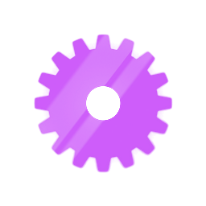

Por trás do X-B0T
ESTAÇÃO 04 / 04
- Bastidores
- 02
- Próxima etapa
- Conclusão

Um jogo de cartas feito para o OdisseIA
IDENTIDADE
O X-B0T é um jogo digital de cartas, com robôs e estética cyberpunk, desenvolvido por outro grupo do OdisseIA para esta jornada.
Os cantos cortados que acompanham você desde o Hub vêm do X-B0T, e o roxo desta estação é a cor do jogo. As engrenagens que marcam o seu progresso saíram da mesma arte deste verso de carta.
Do X-B0T para o site

saíram da mesma arte deste verso de carta
- roxo
- cantos cortados
Por que o X-B0T existe
BASTIDOR 01
O OdisseIA percorre a história dos jogos e o uso da inteligência artificial neles. O X-B0T fecha esse percurso: além de falar sobre jogos, o projeto também desenvolveu um.
Na Estação 3, você viu que, em jogos de cartas, uma inteligência artificial pode analisar jogadas, escolher cartas e controlar um adversário. O X-B0T é a ponte entre esses conceitos e um jogo de verdade.
Isso não significa que todas as técnicas apresentadas na Estação 3 estejam no X-B0T. O que o jogo realmente usa depende do que for concluído pelo grupo responsável, e só aparece aqui depois de confirmado.
Da Estação 3 ao jogo
uma inteligência artificial pode analisar jogadas, escolher cartas e controlar um adversário
O X-B0T é a ponte entre esses conceitos e um jogo de verdade
Isso não significa que todas as técnicas apresentadas na Estação 3 estejam no X-B0T
O que você vai encontrar no jogo
BASTIDOR 02
Mecânicas, cartas e tecnologias entram nesta estação somente depois de confirmadas pelo grupo responsável, com base na versão final do jogo.
Ainda não confirmado
EM VALIDAÇÃO
Conteúdo em validação com o grupo responsável pelo X-B0T.
- Como funciona uma partida
- As cartas
- O papel da inteligência artificial no jogo
- Instruções básicas para jogar
A Conclusão
PRÓXIMA ETAPA
Esta é a última estação do OdisseIA. O acesso ao X-B0T não fica aqui: ele faz parte da Conclusão, a etapa que fecha a jornada depois das quatro estações validadas.
Volte ao Hub para seguir até a Conclusão.
Voltar ao HubPor trás do X-B0T
ESTAÇÃO 04 / 04